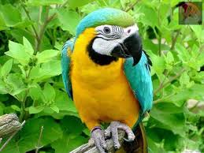

Bu hayvanlar diger hayavnalardan farkli olarak yerde degil goklerde yasarlar diyebiliriz.Bu hayvanlarda hem otla hem de etle beslenen turleri vardir.
KusGuvercinKartalPapaganLeylekKirlangicSinekAriUgur BocegiKargaBaykus